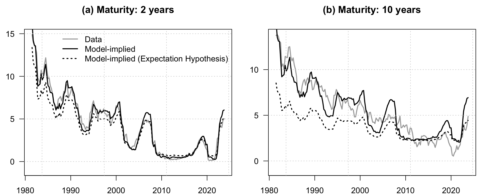
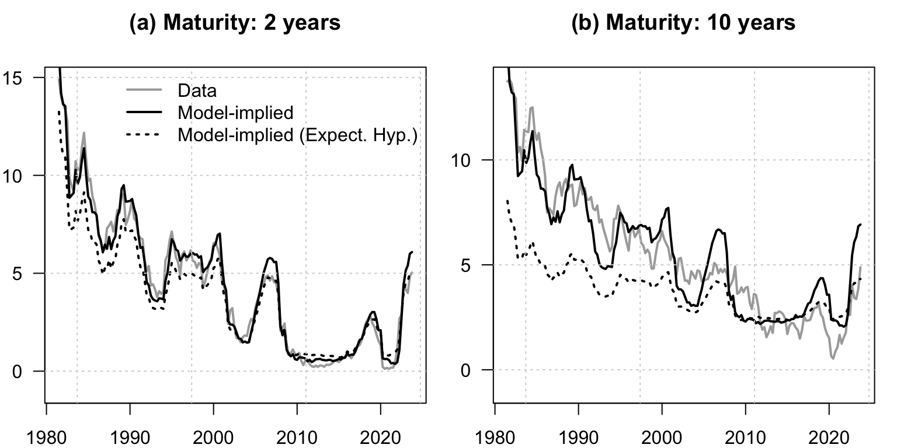
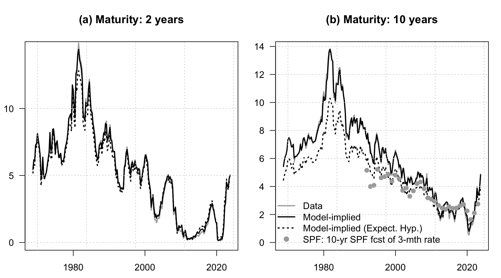
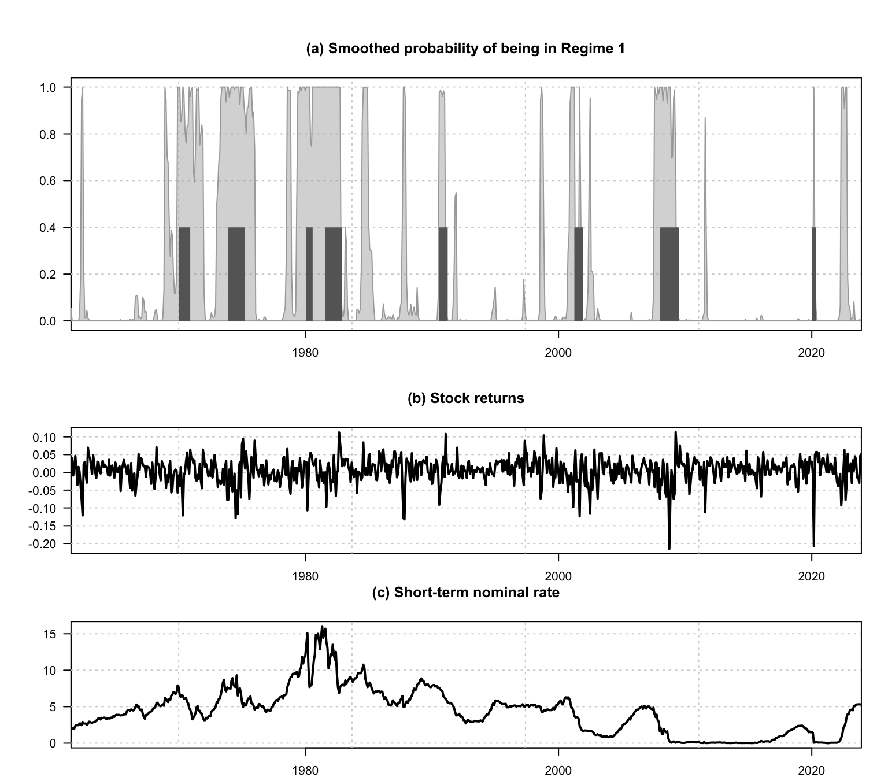
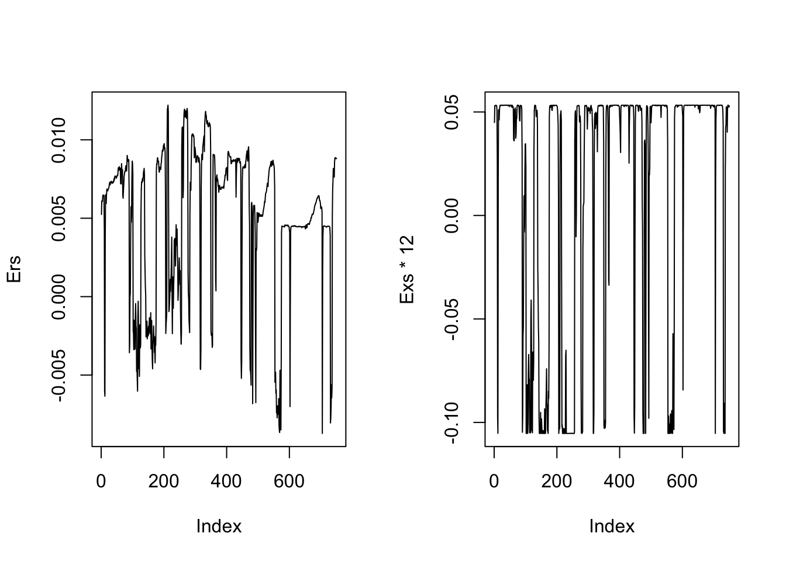
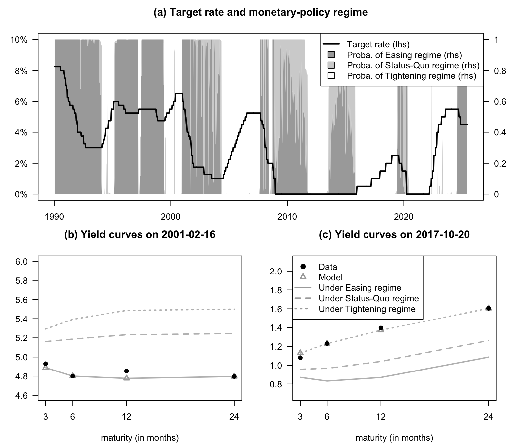
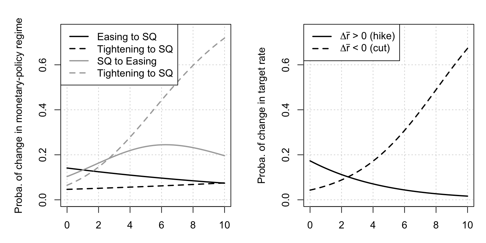

Chapter 15 Estimation
15.1 Maximum likelihood estimation with observed variables
Indicate below whether the models’ parameterizations are re-estimated (otherwise), use pre-estimated parameters.
Code
15.1.1 The likelihood surface and basic ingredients of maximum-likelihood estimation
This example introduces the likelihood surface and basic ingredients of maximum-likelihood estimation.
Code
# Purpose: This example introduces the likelihood surface and basic ingredients of
# maximum-likelihood estimation
library(DTAM)
library(lubridate) # to handle dates
library(vars)
library(optimx)
# ==============================================================================
# Prepare dataset
# ------------------------------------------------------------------------------
data("SPF", package = "DTAM")
data("Data_Macro_US_quarterly", package = "DTAM")
data("YC_LW", package = "DTAM")
DATA <- merge(SPF,Data_Macro_US_quarterly,by="date")
DATA <- merge(DATA,YC_LW,by="date")
freq <- 4 # quarterly frequency
# Create matrix of state variables
wy <- DATA[,c("CPIAUCSL","yld_3m", # price index, 3-month rate
"yld_1y","yld_2y","yld_5y","yld_10y", # nominal yields (LW database)
"BILL1")] # SPF forecast, 3-month rate, 1 year ahead.
maturities_in_model_periods <- c(1,2,5,10)*freq # maturities of yields
horizons_in_model_periods <- c(1)*freq # horizon of forecast
# Compute inflation:
TT <- dim(DATA)[1]
wy$CPIAUCSL <- c(rep(NaN,4),log(DATA$CPIAUCSL[5:TT]/
DATA$CPIAUCSL[1:(TT-4)]))
# Make yields consistent with model frequency:
wy[,2:dim(wy)[2]] <- wy[,2:dim(wy)[2]]/(freq*100)
# Remove entries with NaNs:
date_index <- complete.cases(wy)
wy <- wy[date_index,] # remove missing observations
vec_dates <- DATA$date[date_index]
# State vector:
w <- as.matrix(wy[,1:2])
mean_r <- mean(w[,"yld_3m"]) # keep mean of short-term rate
# Demean state variables (hence no need to estimate mu):
w <- w - t(matrix(apply(w,2,mean),dim(w)[2],dim(w)[1]))
# Observed variables:
y <- as.matrix(wy[,(dim(w)[2]+1):dim(wy)[2]])
n <- dim(w)[2] # dimension of w
# ==============================================================================
# Estimate VAR model (P dynamics; used as starting value)
estVAR <- VAR(w,p=1,type = "none")
Phi <- Acoef(estVAR)[[1]]
mu <- matrix(0,n,1)
Sigma <- var(residuals(estVAR)) # covariance matrix of residuals
modelP <- list(mu=mu,Phi=Phi,Sigma=Sigma)
# Specification of short-term rates:
xi0 <- mean_r
xi1 <- matrix(0,n,1)
xi1[which(colnames(w)=="yld_3m")] <- 1
# Initial specif of prices of risk:
lambda0 <- matrix(0,n,1)
lambda1 <- matrix(0,n,n)
# ==============================================================================
# Specifiy functions used in the estimation:
# ------------------------------------------------------------------------------
param2model_GATSM <- function(param,n,
modelP = NaN){
# If modelP is not NULL, then it is not updated.
mu <- matrix(0,n)
if(is.na(modelP[1])){
Phi <- matrix(param[1:n^2],n,n)
nb <- n^2
Sigma12 <- matrix(0,n,n)
Sigma12[!upper.tri(Sigma12)] <- param[(nb+1):(nb+n*(n+1)/2)]
Sigma <- Sigma12 %*% t(Sigma12)
nb <- nb + n*(n+1)/2
}else{
Phi <- modelP$Phi
Sigma <- modelP$Sigma
nb <- 0
}
lambda0 <- matrix(param[(nb+1):(nb+n)],ncol=1)
lambda1 <- matrix(param[(nb+n+1):(nb+n+n^2)],n,n)
nb <- nb + n + n^2
Sigma12 <- t(chol(Sigma))
muQ <- mu + Sigma12 %*% lambda0
PhiQ <- Phi + Sigma12 %*% lambda1
modelP <- list(mu=mu,Phi=Phi,Sigma=Sigma)
modelQ <- list(mu=muQ,Phi=PhiQ,Sigma=Sigma)
# Same standard deviation for yields and forecasts:
std_dev <- param[nb+1]
return(list(modelP=modelP,
modelQ=modelQ,
lambda0 = lambda0,lambda1 = lambda1,
std_dev=std_dev))
}
make_StateSpace_GATSM <- function(models,
xi0,xi1,
maturities_in_model_periods,
horizons_in_model_periods=NaN){
# This function builds the state-space model assocoated with
# a Gaussian Affine Term Structure models.
modelP <- models$modelP
modelQ <- models$modelQ
resAB <- compute_AB_classical(xi0,xi1,
H=max(maturities_in_model_periods), # maximum maturity
psi=psi_GaussianVAR,
psi.parameterization=modelQ)
# Affine representation of yields, for selected maturities:
A <- resAB$a[,1,maturities_in_model_periods]
B <- resAB$b[,1,maturities_in_model_periods]
# Short-term rate forecasts:
resAB_P <- compute_AB_classical(xi0,xi1,
H=max(maturities_in_model_periods,
horizons_in_model_periods), # maximum horizon
psi=psi_GaussianVAR,
psi.parameterization=modelP)
if(!is.na(horizons_in_model_periods[1])){
# Affine representation of short-term rate forecasts, for selected maturities:
A_BILL <- resAB_P$a[,1,horizons_in_model_periods]
B_BILL <- resAB_P$b[,1,horizons_in_model_periods]
}else{
A_BILL <- NaN
B_BILL <- NaN
}
# Affine representation of yields under P, for selected maturities:
A_P <- resAB_P$a[,1,maturities_in_model_periods]
B_P <- resAB_P$b[,1,maturities_in_model_periods]
return(list(A = A, B = B,
A_P = A_P, B_P = B_P,
A_BILL = A_BILL, B_BILL = B_BILL,
resAB = resAB,
resAB_P = resAB_P))}
loglik_GATSM_observed_factors <- function(param,y,w,
maturities_in_model_periods,
horizons_in_model_periods,
modelP = NaN,
max_lambdalambda_squared = NaN){
# This function computes the log-likelihood associated with a Gaussian
# Affine Term Structure model with observed factors (w)
# y contains observations of yields and forecasts of the short-term yield.
# If modelP not NaN, then do not estimate P dynamics
n <- dim(w)[2]
TT <- dim(w)[1]
models <- param2model_GATSM(param,n,modelP)
SS <- make_StateSpace_GATSM(models,
xi0,xi1,
maturities_in_model_periods,
horizons_in_model_periods)
nb_mat <- length(maturities_in_model_periods)
nb_horiz <- length(horizons_in_model_periods)
yds_model <- w %*% SS$A + t(matrix(SS$B,nb_mat,TT))
BILL_model <- w %*% SS$A_BILL + t(matrix(SS$B_BILL,nb_horiz,TT))
# Measurement errors:
eta <- cbind(yds_model,BILL_model) - y # pricing errors
# w's innovations:
epsilon <- w[2:TT,] - w[1:(TT-1),] %*% t(models$modelP$Phi)
logL_measur <- log_mvdnorm(eta, diag(rep(models$std_dev^2,nb_mat+nb_horiz)))
logL_transit <- log_mvdnorm(epsilon, Sigma)
if(is.na(max_lambdalambda_squared)){
penalty <- 0
}else{
lambda0 <- models$lambda0
lambda1 <- models$lambda1
Phi <- models$modelP$Phi
Var_w <- matrix(
solve(diag(n^2) - Phi %x% Phi) %*% c(models$modelP$Sigma),
n,n)
sum_lambdalambda <-
sum(models$lambda0^2) + sum(diag(lambda1 %*% Var_w %*% t(lambda1)))
penalty <- 10*(sum_lambdalambda > max_lambdalambda_squared) *
(sum_lambdalambda - max_lambdalambda_squared)^2
}
return(-(logL_measur + logL_transit) + penalty)
}
# ==============================================================================The following chunk estimates the model while imposing restrictions on \(\boldsymbol\lambda_0\) and \(\boldsymbol\lambda_1\) (which disciplines the estimation).
15.1.2 Initialization affects likelihood-based estimation results
This example shows how initialization affects likelihood-based estimation results.
Code
# Purpose: This example shows how initialization affects likelihood-based estimation results
max_lambdalambda_squared <- 1 # If NaN, no restrictions imposed on lambda_t
# ==============================================================================
# ==============================================================================
# Estimation by MLE
# ------------------------------------------------------------------------------
if(indic_reestim){
std_dev <- sd(y)
for(indic_update_P in c(FALSE,TRUE)){
if(indic_update_P){
modelP <- NaN
Sigma12 <- t(chol(Sigma))
param_est <- c(Phi,Sigma12[!upper.tri(Sigma12)])
}else{
modelP <- list(mu = matrix(0,dim(w)[2]),
Phi = Phi, Sigma = Sigma)
param_est <- NULL
}
param_est <- c(param_est,lambda0,lambda1,std_dev)
if(!indic_update_P){
nb_loop <- 2
}else{
nb_loop <- 5
}
for(i in 1:nb_loop){
print(paste("--- Loop ",i," ---",sep=""))
for(method in c("Nelder-Mead","nlminb")){
res.optim <- optimx(par=param_est,
fn=loglik_GATSM_observed_factors,
y=y,w=w,
maturities_in_model_periods=maturities_in_model_periods,
horizons_in_model_periods=horizons_in_model_periods,
modelP = modelP,
max_lambdalambda_squared = max_lambdalambda_squared,
method=method,
control=list(trace=FALSE,
maxit=ifelse(method=="Nelder-Mead",4000,20),
kkt = FALSE))
print(paste("--- Log-lik (",method,"): ",round(res.optim$value,2)," ---",sep=""))
param_est <- c(as.matrix(res.optim)[1:length(param_est)])
}
}
models <- param2model_GATSM(param_est,n,
modelP = modelP)
lambda0 <- models$lambda0
lambda1 <- models$lambda1
std_dev <- models$std_dev
}
save(param_est,
file=
paste("stored_results/param_GATSM_obs_varia_lambda_",
max_lambdalambda_squared,".Rdat",sep=""))
}else{
load(file=paste("stored_results/param_GATSM_obs_varia_lambda_",
max_lambdalambda_squared,".Rdat",sep=""))
}
# ==============================================================================
# ==============================================================================
# Prepare plots
# ------------------------------------------------------------------------------
n <- dim(w)[2]
TT <- dim(w)[1]
models <- param2model_GATSM(param_est,n)
SS <- make_StateSpace_GATSM(models,
xi0,xi1,
maturities_in_model_periods,
horizons_in_model_periods)
nb_mat <- length(maturities_in_model_periods)
nb_horiz <- length(horizons_in_model_periods)
yds_model <- w %*% SS$A + t(matrix(SS$B,nb_mat,TT))
BILL_model <- w %*% SS$A_BILL + t(matrix(SS$B_BILL,nb_horiz,TT))
yds_model_P <- w %*% SS$A_P + t(matrix(SS$B_P,nb_mat,TT))
par(mfrow=c(1,2))
par(plt=c(.1,.95,.1,.85))
count <- 0
for(maturity in c(2,10)){
count <- count + 1
main.t <- paste("(",letters[count],") Maturity: ",maturity," years",sep="")
m <- which(maturities_in_model_periods==freq*maturity)
vari <- paste("yld_",maturity,"y",sep="")
plot(vec_dates,freq*100*y[,vari],type="l",lty=1,lwd=2,col="dark grey",
ylim=c(-1,max(freq*100*y[,vari])),
xlab="",ylab="",las=1,main=main.t)
lines(vec_dates,freq*100*yds_model[,m],lty=1,lwd=2)
lines(vec_dates,freq*100*yds_model_P[,m],lty=3,lwd=2)
grid()
if(count == 1){
legend("topright",
legend=c("Data","Model-implied","Model-implied (Expectation Hypothesis)"),
lty=c(1,1,3),
col=c("dark grey","black","black"),
lwd=c(2,2,2),bty = "n")
}
}
In the following chunk, we remove the restrictions on \(\boldsymbol\lambda_0\) and \(\boldsymbol\lambda_1\).
15.1.3 Observed variables with their fitted counterparts under the estimated model
This example compares observed variables with their fitted counterparts under the estimated model.
Code
# Purpose: This example compares observed variables with their fitted counterparts under the
# estimated model
# ==============================================================================
max_lambdalambda_squared <- NaN # If NaN, no restrictions imposed on lambda_t
# ==============================================================================
# ==============================================================================
# Estimation by MLE
# ------------------------------------------------------------------------------
if(indic_reestim){
nb_loop <- 20
for(i in 1:nb_loop){
print(paste("--- Loop ",i," ---",sep=""))
for(method in c("Nelder-Mead","nlminb")){
res.optim <- optimx(par=param_est,
fn=loglik_GATSM_observed_factors,
y=y,w=w,
maturities_in_model_periods=maturities_in_model_periods,
horizons_in_model_periods=horizons_in_model_periods,
modelP = modelP,
max_lambdalambda_squared = max_lambdalambda_squared,
method=method,
control=list(trace=FALSE,
maxit=ifelse(method=="Nelder-Mead",4000,20),
kkt = FALSE))
print(paste("--- Log-lik (",method,"): ",round(res.optim$value,2)," ---",sep=""))
param_est <- c(as.matrix(res.optim)[1:length(param_est)])
}
}
save(param_est,
file=
paste("stored_results/param_GATSM_obs_varia_lambda_",
max_lambdalambda_squared,".Rdat",sep=""))
}else{
load(file=paste("stored_results/param_GATSM_obs_varia_lambda_",
max_lambdalambda_squared,".Rdat",sep=""))
}
# ==============================================================================
# ==============================================================================
# Prepare plots
# ------------------------------------------------------------------------------
n <- dim(w)[2]
TT <- dim(w)[1]
models <- param2model_GATSM(param_est,n)
SS <- make_StateSpace_GATSM(models,
xi0,xi1,
maturities_in_model_periods,
horizons_in_model_periods)
nb_mat <- length(maturities_in_model_periods)
nb_horiz <- length(horizons_in_model_periods)
yds_model <- w %*% SS$A + t(matrix(SS$B,nb_mat,TT))
BILL_model <- w %*% SS$A_BILL + t(matrix(SS$B_BILL,nb_horiz,TT))
yds_model_P <- w %*% SS$A_P + t(matrix(SS$B_P,nb_mat,TT))
par(mfrow=c(1,2))
par(plt=c(.1,.95,.1,.85))
count <- 0
for(maturity in c(2,10)){
count <- count + 1
main.t <- paste("(",letters[count],") Maturity: ",maturity," years",sep="")
m <- which(maturities_in_model_periods==freq*maturity)
vari <- paste("yld_",maturity,"y",sep="")
plot(vec_dates,freq*100*y[,vari],type="l",lty=1,lwd=2,col="dark grey",
ylim=c(-1,max(freq*100*y[,vari])),
xlab="",ylab="",las=1,main=main.t)
lines(vec_dates,freq*100*yds_model[,m],lty=1,lwd=2)
lines(vec_dates,freq*100*yds_model_P[,m],lty=3,lwd=2)
grid()
if(count == 1){
legend("topright",
legend=c("Data","Model-implied","Model-implied (Expect. Hyp.)"),
lty=c(1,1,3),
col=c("dark grey","black","black"),
lwd=c(2,2,2),bty = "n")
}
}
15.2 Maximum Likelihood with the Kalman filter
In this section, we take the same data and estimate a model with latent state vector, using the Kalman filter.
In this example, we use the same data as in the preceding observed-state maximum-likelihood exercise, in the context described by Christensen, Diebold, and Rudebusch (2009). Specifically, we consider a three-factor model following a Gaussian VAR: \[ w_t = \left[\begin{array}{c}X_{1,t}\\X_{2,t}\\X_{3,t}\end{array}\right] = \left[\begin{array}{ccc} \lambda_1 & 0 & 0\\ 0&1-\lambda_2&\lambda_2\\ 0&0&1-\lambda_2\end{array}\right] \left[\begin{array}{c}X_{1,t-1}\\X_{2,t-1}\\X_{2,t-1}\end{array}\right] + \left[\begin{array}{ccc} \sigma_{11} & 0 & 0\\ \sigma_{21}&\sigma_{22}&0\\ \sigma_{31}&\sigma_{32}&\sigma_{33}\end{array}\right] \left[\begin{array}{c}\varepsilon_{1,t}\\\varepsilon_{2,t}\\\varepsilon_{3,t}\end{array}\right], \] where \(\left[\begin{array}{c}\varepsilon_{1,t}\\\varepsilon_{2,t}\\\varepsilon_{3,t}\end{array}\right] \sim \,i.i.d.\, \mathcal{N}(0,Id)\).
The nominal short-term rate is given by \(i_t = X_{1,t}+X_{2,t}\).
Christensen, Diebold, and Rudebusch (2009) show that such specifications allow to approximate the widely-used Nelson-Siegel yield curve specification.3
15.2.1 Estimated latent factors from the maximum-likelihood exercise
This example reports estimated latent factors from the maximum-likelihood exercise.
Code
# Purpose: This example reports estimated latent factors from the maximum-likelihood exercise
# Dataset ----------------------------------------------------------------------
# Create matrix of observables
observables <- DATA[,c("yld_3m","yld_1y","yld_2y","yld_5y","yld_10y", # nominal yields (LW database)
"BILL1","BILL10")] # SPF forecast, 3-month rate, 1 and 10 years ahead.
maturities_in_model_periods <- c(.25,1,2,5,10)*freq # maturities of yields
horizons_in_model_periods <- c(1,10)*freq # horizon of forecast
# Make yields consistent with model frequency:
observables <- as.matrix(observables)/(freq*100)
# vector of dates:
vec_dates <- DATA$date
# Estimation -------------------------------------------------------------------
# Constraint on unreasonable Sharpe Ratios:
max_lambdalambda_squared <- NaN
# Number of factors
n <- 3
TT <- dim(observables)[1]
param2model_AFNS <- function(param){
# Parameterize the three-factor model of Christensen, Diebold, and Rudebusch (2009).
# This model is called Arbitrage-Free Nelson-Siegel (AFNS)
n <- 3 # three factor model
mu <- matrix(param[1:n],n)
nb <- n
lambda1P <- exp(param[nb+1])/(1+exp(param[nb+1]))
lambda2P <- exp(param[nb+2])/(1+exp(param[nb+2]))
Phi <- diag(c(1-lambda1P,1-lambda2P,1-lambda2P))
Phi[2,3] <- lambda2P
nb <- nb + 2
# Phi <- matrix(param[(nb+1):(nb+n^2)],n,n)
# nb <- nb + n^2
Sigma12 <- matrix(0,n,n)
Sigma12[!upper.tri(Sigma12)] <- param[(nb+1):(nb+n*(n+1)/2)]
Sigma <- Sigma12 %*% t(Sigma12)
nb <- nb + n*(n+1)/2
muQ <- matrix(0,n,1)
lambda1Q <- exp(param[nb+1])/(1+exp(param[nb+1]))
lambda2Q <- exp(param[nb+2])/(1+exp(param[nb+2]))
PhiQ <- diag(c(1-lambda1Q,1-lambda2Q,1-lambda2Q))
PhiQ[2,3] <- lambda2Q
nb <- nb + 2
lambda0 <- solve(Sigma12) %*% (muQ - mu)
lambda1 <- solve(Sigma12) %*% (PhiQ - Phi)
modelP <- list(mu=mu,Phi=Phi,Sigma=Sigma,Sigma12=Sigma12)
modelQ <- list(mu=muQ,Phi=PhiQ,Sigma=Sigma,Sigma12=Sigma12)
xi0 <- param[nb+1]
xi1 <- matrix(c(1,1,0),n,1)
nb <- nb + 1
# Same standard deviation for yields and forecasts:
std_dev <- max(exp(param[nb+1]),.0001)
return(list(modelP=modelP,
modelQ=modelQ,
xi0 = xi0, xi1 = xi1,
lambda0 = lambda0,lambda1 = lambda1,
std_dev=std_dev))
}
loglik_AFNS <- function(param,observables,
maturities_in_model_periods,
horizons_in_model_periods,
max_lambdalambda_squared = NaN){
# This function computes the log-likelihood associated with a Gaussian
# Affine Term Structure model with observed factors (w)
# y contains observations of yields and forecasts of the short-term yield.
# If modelP not NaN, then do not estimate P dynamics
models <- param2model_AFNS(param)
n <- dim(models$modelP$Phi)[2]
# Unconditional variance of w:
Phi <- models$modelP$Phi
Var_w <- matrix(
solve(diag(n^2) - Phi %x% Phi) %*% c(models$modelP$Sigma),
n,n)
SS <- make_StateSpace_GATSM(models,
models$xi0,models$xi1,
maturities_in_model_periods,
horizons_in_model_periods)
nb_mat <- length(maturities_in_model_periods)
nb_horiz <- length(horizons_in_model_periods)
# Define matrices needed in the Kalman_filter procedures:
nu_t <- t(matrix(models$modelP$mu,n,TT))
H <- models$modelP$Phi
G <- t(cbind(SS$A,SS$A_BILL))
mu_t <- cbind(t(matrix(SS$B,nb_mat,TT)),
t(matrix(SS$B_BILL,nb_horiz,TT)))
N <- models$modelP$Sigma12
M <- diag(rep(models$std_dev,dim(observables)[2]))
Sigma_0 <- Var_w # unconditional variance of w
rho_0 <- matrix(0,n,1) # unconditional mean of w
filter.res <- Kalman_filter(observables,nu_t,H,N,mu_t,G,M,Sigma_0,rho_0)
if(is.na(max_lambdalambda_squared)){
penalty <- 0
}else{
lambda0 <- models$lambda0
lambda1 <- models$lambda1
sum_lambdalambda <-
sum(models$lambda0^2) + sum(diag(lambda1 %*% Var_w %*% t(lambda1)))
penalty <- 10*(sum_lambdalambda > max_lambdalambda_squared) *
(sum_lambdalambda - max_lambdalambda_squared)^2
}
penalty <- penalty + 100*sum(
(abs(param)>20)*(abs(param)-20)
)
loss <- - sum(filter.res$loglik.vector) + penalty
return(loss)
}
mu <- matrix(0,n,1)
lambda1P <- .1
lambda2P <- .1
lambda1Q <- .1
lambda2Q <- .1
Sigma <- .01^2 * diag(n)
Sigma12 <- t(chol(Sigma))
param_est <- c(mu,
log(lambda1P/(1-lambda1P)),log(lambda2P/(1-lambda2P)),
Sigma12[!upper.tri(Sigma12)],
log(lambda1Q/(1-lambda1Q)),log(lambda2Q/(1-lambda2Q)),
.06/freq,#r_infty
log(.05))# std_dev
# Initialization:
param <- param_est
if(indic_reestim){
nb_loop <- 3
for(i in 1:nb_loop){
print(paste("--- Loop ",i," ---",sep=""))
for(method in c("nlminb","Nelder-Mead")){
# for(method in c("nlminb")){
res.optim <- optimx(par=param_est,
fn=loglik_AFNS,
observables=observables,
maturities_in_model_periods=maturities_in_model_periods,
horizons_in_model_periods=horizons_in_model_periods,
max_lambdalambda_squared = max_lambdalambda_squared,
method=method,
control=list(trace=TRUE,
maxit=ifelse(method=="Nelder-Mead",2000,100),
kkt = FALSE)
)
print(paste("--- Log-lik: ",round(res.optim$value,2)," ---",sep=""))
param_est <- c(as.matrix(res.optim)[1:length(param_est)])
}
}
save(param_est,
file=
paste("stored_results/param_AFNS_lambda_",
max_lambdalambda_squared,".Rdat",sep=""))
}else{
load(file=paste("stored_results/param_AFNS_lambda_",
max_lambdalambda_squared,".Rdat",sep=""))
}
# ==============================================================================
# ==============================================================================
# Prepare plots
# ------------------------------------------------------------------------------
TT <- dim(observables)[1]
models <- param2model_AFNS(param_est)
n <- dim(models$modelP$Phi)[2]
# Unconditional variance of w:
Phi <- models$modelP$Phi
Var_w <- matrix(
solve(diag(n^2) - Phi %x% Phi) %*% c(models$modelP$Sigma),
n,n)
SS <- make_StateSpace_GATSM(models,
models$xi0,models$xi1,
maturities_in_model_periods,
horizons_in_model_periods)
nb_mat <- length(maturities_in_model_periods)
nb_horiz <- length(horizons_in_model_periods)
# Define matrices needed in the Kalman_filter procedures:
nu_t <- t(matrix(models$modelP$mu,n,TT))
H <- models$modelP$Phi
G <- t(cbind(SS$A,SS$A_BILL))
mu_t <- cbind(t(matrix(SS$B,nb_mat,TT)),
t(matrix(SS$B_BILL,nb_horiz,TT)))
N <- models$modelP$Sigma12
M <- diag(rep(models$std_dev,dim(observables)[2]))
Sigma_0 <- Var_w # unconditional variance of w
rho_0 <- matrix(0,n,1) # unconditional mean of w
filter.res <- Kalman_filter(observables,nu_t,H,N,mu_t,G,M,Sigma_0,rho_0)
ww <- filter.res$r
yds_model <- ww %*% SS$A + t(matrix(SS$B,nb_mat,TT))
BILL_model <- ww %*% SS$A_BILL + t(matrix(SS$B_BILL,nb_horiz,TT))
yds_model_P <- ww %*% SS$A_P + t(matrix(SS$B_P,nb_mat,TT))
par(mfrow=c(1,2))
par(plt=c(.1,.95,.1,.85))
count <- 0
for(maturity in c(2,10)){
count <- count + 1
main.t <- paste("(",letters[count],") Maturity: ",maturity," years",sep="")
m <- which(maturities_in_model_periods==freq*maturity)
plot(vec_dates,freq*100*observables[,m],type="l",lty=1,lwd=2,col="dark grey",
ylim=c(0,max(freq*100*yds_model[,m])),
xlab="",ylab="",las=1,main=main.t)
lines(vec_dates,freq*100*yds_model[,m],lty=1,lwd=2)
lines(vec_dates,freq*100*yds_model_P[,m],lty=3,lwd=2)
if(maturity==10){
points(vec_dates,DATA$BILL10,pch=19,lwd=1,col="dark grey")
}
grid()
if(count == 2){
legend("bottomleft",
legend=c("Data","Model-implied","Model-implied (Expect. Hyp.)",
"SPF: 10-yr SPF fcst of 3-mth rate"),
lty=c(1,1,3,NaN),
pch=c(NaN,NaN,NaN,19),
col=c("dark grey","black","black","dark grey"),
lwd=c(2,2,2),bty = "n")
}
}
15.3 Kitagawa-Hamilton
This example estimates a regime-switching stock-return model and visualizes the inferred states.
Code
# Purpose: This example estimates a regime-switching stock-return model and visualizes the
# inferred states
library(DTAM)
library(expm)
library(mvtnorm)
library(optimx)
library(tis) # for NBER recession dates
param2model <- function(param,J=2){
nb <- 0 # number of parameters already used
# matrix of transition probabilities:
Pi <- matrix(0,J,J)
diag(Pi) <- exp(param[1:J])/(1+exp(param[1:J]))
Pi[1,2] <- 1- Pi[1,1]
Pi[J,J-1] <- 1- Pi[J,J]
nb <- nb + J
if(J>2){
par_aux <- param[(nb+1):(nb+J-2)]
par_aux <- exp(par_aux)/(1+exp(par_aux))
if(length(par_aux)==1){# in thius case, J=3
aux <- par_aux*(1-Pi[2,2])
}else{
aux <- diag(c(par_aux)*(1-diag(Pi[2:(J-1),2:(J-1)])))
}
Pi[2:(J-1),1:(J-2)] <- Pi[2:(J-1),1:(J-2)] + aux
sum_rows <- apply(matrix(Pi[2:(J-1),],J-2,J),1,sum)
if(length(sum_rows)==1){
aux <- 1 - sum_rows
}else{
aux <- diag(J-2) - diag(c(sum_rows))
}
Pi[2:(J-1),3:J] <- Pi[2:(J-1),3:J] + aux
nb <- nb + J - 2
}
phi <- .999*exp(param[nb+1])/(1+exp(param[nb+1]))
nb <- nb + 1
mu_r <- matrix(param[(nb+1):(nb+J)],ncol=1)/100
nb <- nb + J
sigma_r <- matrix(param[(nb+1):(nb+J)],ncol=1)/100
nb <- nb + J
mu_s2 <- matrix(param[(nb+1):(nb+3*J+1)],ncol=1)/100
nb <- nb + 3*J + 1
lambda <- matrix(param[(nb+1):(nb+3*J+1)],ncol=1)/100
nb <- nb + 3*J + 1
model <- list(Pi = Pi,
phi = phi,
mu_r = mu_r,
sigma_r = sigma_r,
mu_s2 = mu_s2,
lambda = lambda)
return(model)
}
model2param <- function(model){
Pi <- model$Pi
J <- dim(Pi)[1]
param <- log(diag(Pi)/(1-diag(Pi)))
if(J>2){
if(J==3){
aux <- Pi[2,1]/(1-Pi[2,2])
}else{
aux <- diag(Pi[2:(J-1),1:(J-2)])/(1-diag(Pi)[2:(J-1)])
}
param <- c(param,
log(aux/.999/(1-aux/.999)))
}
param <- c(param,
log(model$phi/(1-model$phi)),
100*model$mu_r,
100*model$sigma_r,
100*model$mu_s2,
100*model$lambda)
return(param)
}
solve_model_RS_stocks <- function(model){
model$mu_s0 <- 0
J <- dim(model$Pi)[1]
e_1 <- matrix(c(1,rep(0,3*J)),1+3*J,1)
model$mu_s1 <- e_1 + psi_RS_stock(model$lambda,model)$a -
psi_RS_stock(model$lambda + model$mu_s2,model)$a
return(model)
}
psi_RS_stock <- function(u,model){
# Laplace transform of the state vector w_t, with
# w_t = (r_t,z_t',eps_{r,t}z_t',eps_{s,t}z_t')'
# u is n x k, where n = 1+3*J. Indeed, dimension of J is 1+3*J
# k is the number of vectors on which one wants to evaluate the LT of w
J <- (dim(u)[1]-1)/3
k <- dim(u)[2]
Pi <- model$Pi
phi <- model$phi
mu_r <- model$mu_r
sigma_r <- model$sigma_r
mu_s2 <- model$mu_s2
lambda <- model$lambda
u_r <- matrix(u[1,],nrow=1)
U_z <- matrix(u[(1+0*J+1):(1+1*J),],J,k)
U_r <- matrix(u[(1+1*J+1):(1+2*J),],J,k)
U_s <- matrix(u[(1+2*J+1):(1+3*J),],J,k)
a <- rbind(
u_r*phi,
log(Pi %*% exp((matrix(1,J,1)%*%u_r)*(mu_r %*% matrix(1,1,k)) + U_z +
.5*((matrix(1,J,1)%*%u_r) * sigma_r %*% matrix(1,1,k) + U_r)^2 +
.5*U_s^2)),
matrix(0,2*J,k)
)
return(list(a=a,b=0))
}
simul_model_RS_stocks <- function(model,TT){
# This function simulates the regime-switching stock-return model.
J <- dim(model$Pi)[1]
z <- simul_RS(model$Pi,TT)
# Compute unconditional distribution of z:
Paux <- t(model$Pi)
for(i in 1:10){
Paux <- Paux %^% 2
}
Ez <- matrix(Paux[,1],ncol=1)
# mean STR:
Emu_r <- t(model$mu_r) %*% Ez
Er <- Emu_r/(1-model$phi)
epsilon_r <- matrix(rnorm(TT),ncol=1)
epsilon_s <- matrix(rnorm(TT),ncol=1)
w <- cbind(0,z,
z*(epsilon_r%*%matrix(1,1,J)),
z*(epsilon_s%*%matrix(1,1,J)))
r <- Er
for(t in 1:TT){
r <- z[t,] %*% model$mu_r + phi*r + (z[t,] %*% model$sigma_r)*epsilon_r[t]
w[t,1] <- r
}
w_1 <- rbind(NaN,w[1:(TT-1),])
rs <- model_solved$mu_s0 + w_1%*%model_solved$mu_s1 + w%*%model_solved$mu_s2
return(list(w=w,z=z,
rs=rs,r=w[,1]))
}
filter_RS_stocks <- function(model_solved,Y,indic_smooth=FALSE){
# Y contains the dataset:
# - 1st column: short-term rate r_t
# - 2nd column: stock return rs_t
TT <- dim(Y)[1]
J <- dim(model_solved$Pi)[1]
mu_r_extended <- model_solved$mu_r %x% matrix(1,J,1)
sigma_r_extended <- model_solved$sigma_r %x% matrix(1,J,1)
# Compute the matrix of transition probabilities of z_{t} %x% z_{t-1}:
PI <- make_Pi_z_kron_z(model_solved$Pi)
# Compute epsilon_r as a function of z_{t} %x% z_{t-1} -----------------------
r <- Y[2:TT,1] %*% matrix(1,1,J*J)
r_1 <- Y[1:(TT-1),1] %*% matrix(1,1,J*J)
sigma_r_epsilon_r <- r - model_solved$phi * r_1 - matrix(1,TT-1,1) %*% t(mu_r_extended)
epsilon_r <- sigma_r_epsilon_r/(matrix(1,TT-1,1) %*% t(sigma_r_extended))
# Compute epsilon_s as a function of z_{t} %x% z_{t-1} -----------------------
rs <- Y[2:TT,2] %*% matrix(1,1,J*J)
mu_s1_z_extended <- matrix(1,J,1) %x% matrix(model_solved$mu_s1[2:(J+1)],ncol=1)
mu_s2_z_extended <- matrix(model_solved$mu_s2[2:(J+1)],ncol=1) %x% matrix(1,J,1)
sigma_sr_extended <- matrix(model_solved$mu_s2[(1+1*J+1):(1+2*J)],ncol=1) %x% matrix(1,J,1)
sigma_ss_extended <- matrix(model_solved$mu_s2[(1+2*J+1):(1+3*J)],ncol=1) %x% matrix(1,J,1)
sigma_s_epsilon_s <-
rs - model_solved$mu_s0 -
model_solved$mu_s1[1] * r_1 -
matrix(1,TT-1,1) %*% t(mu_s1_z_extended) -
model_solved$mu_s2[1] * r -
matrix(1,TT-1,1) %*% t(mu_s2_z_extended) -
(matrix(1,TT-1,1) %*% t(sigma_sr_extended))*epsilon_r
# epsilon_s <- sigma_s_epsilon_s/(matrix(1,TT-1,1) %*% t(sigma_ss_extended))
Eta <- matrix(NaN,TT-1,J*J)
for(i in 1:(J*J)){
sigma <- diag(c(sigma_sr_extended[i]^2,sigma_ss_extended[i]^2))
sigma_times_epsilon <- cbind(sigma_r_epsilon_r[,i],sigma_s_epsilon_s[,i])
# Eta[,i] <- dmvnorm(sigma_times_epsilon,sigma=sigma,log = TRUE)
Eta[,i] <- -
log(sqrt(2*pi*sigma_sr_extended[i]^2))-.5*sigma_r_epsilon_r[,i]^2/sigma_sr_extended[i]^2-
log(sqrt(2*pi*sigma_ss_extended[i]^2))-.5*sigma_s_epsilon_s[,i]^2/sigma_ss_extended[i]^2
}
res_KH <- KH_filter(PI,Eta)
res_KH$ksi_matrix <- res_KH$ksi_matrix %*% (diag(J) %x% matrix(1,J,1))
if(indic_smooth){
res_KH$ksi_tT_matrix <- KH_smoother(PI,Eta) %*% (diag(J) %x% matrix(1,J,1))
}
return(res_KH)
}
loglik4optim <- function(param,Y,J=2){
model <- param2model(param,J=J)
model_solved <- solve_model_RS_stocks(model)
res_KH <- filter_RS_stocks(model_solved,Y)
return(-res_KH$loglik)
}
# Prepare dataset:
P <- Shiller$RealTotReturnPrice
TT <- dim(Shiller)[1]
Shiller$RealTotReturn <- c(NaN,log(P[2:TT]/P[1:(TT-1)]))
DATA <- YC_LW[,c("date","yld_1m")]
DATA$yld_1m <- DATA$yld_1m/1200
names(DATA)[1] <- "Date"
DATA <- merge(DATA,Shiller,by="Date")
TT <- dim(DATA)[1]
Y <- cbind(DATA$yld_1m,DATA$RealTotReturn)
Y <- Y[complete.cases(Y),]
TT <- dim(Y)[1]
# Make initial model:
Pi <- matrix(c(.95,.15,.05,.85),2,2)
mu_s2 <- matrix(c(0,
.01,-.03,
.01,.01,
.01,.03),ncol=1)
lambda <- matrix(c(0,
.01,.02,
.01,.01,
.01,.01),ncol=1)
model <- list(Pi=Pi,
phi = .9,
mu_r = matrix(c(.001,-.001),ncol=1),
sigma_r = matrix(c(.0025,.005),ncol=1),
mu_s2 = mu_s2,
lambda = lambda)
param_est <- model2param(model)
if(indic_reestim){
nb_loop <- 20
for(i in 1:nb_loop){
print(paste("--- Loop ",i," ---",sep=""))
for(method in c("Nelder-Mead","nlminb")){
res.optim <- optimx(par=param_est,
fn=loglik4optim,
Y=Y,J=2,
method=method,
control=list(trace=TRUE,
maxit=ifelse(method=="Nelder-Mead",3000,20),
kkt = FALSE))
print(paste("--- Log-lik (",method,"): ",round(res.optim$value,2)," ---",sep=""))
param_est_tempo <- c(as.matrix(res.optim)[1:length(param_est)])
if(sum(is.na(param_est_tempo))==0){
param_est <- param_est_tempo
}else{
print("problem")
}
}
}
save(param_est,file="stored_results/param_RS_stocks.Rdat")
}else{
load(file="stored_results/param_RS_stocks.Rdat")
}
J <- 2
model <- param2model(param_est,J=J)
model_solved <- solve_model_RS_stocks(model)
res_KH <- filter_RS_stocks(model_solved,Y,indic_smooth = TRUE)
res_KH_smoothed <- 1
par(mfrow=c(1,1))
regime <- 1
vec_dates <- DATA$Date[2:dim(DATA)[1]]
par(mfrow=c(3,1))
par(plt=c(.08,.97,.15,.8))
layout(matrix(1:3, nrow = 3, byrow = TRUE),
heights = c(2, 1, 1)) # relative heights
proba <- res_KH$ksi_tT_matrix[,regime]
plot(vec_dates,proba,type="l",lwd=2,col="white",
xaxs = "i",xlab="",ylab="",
main="(a) Smoothed probability of being in Regime 1",las=1)
grid()
# lines(DATA$Date[2:dim(DATA)[1]],res_KH$ksi_matrix[,regime],col="red",lwd=2)
polygon(c(vec_dates,rev(vec_dates)),c(proba,0*proba),
border="darkgrey",col="#AAAAAA77")
invisible(make_recessions(col = "#666666FF",MIN=0,MAX=.4))
plot(vec_dates,Y[2:TT,2],type="l",col="white",las=1,
xaxs = "i",xlab="",ylab="",
main="(b) Stock returns")
grid()
lines(vec_dates,Y[2:TT,2],lwd=2)
plot(vec_dates,1200*Y[2:TT,1],type="l",col="white",las=1,
xaxs = "i",xlab="",ylab="",
main="(c) Short-term nominal rate")
grid()
lines(vec_dates,1200*Y[2:TT,1],lwd=2)
15.3.1 Additional diagnostics for the regime-switching stock model
This example reports additional diagnostics for the regime-switching stock model.
Code
# Purpose: This example reports additional diagnostics for the regime-switching stock model
# Compute expected stock returns
model_solved$n_w <- length(model_solved$mu_s1)
aux <- compute_expect_variance(psi_RS_stock,model_solved)
r <- Y[2:TT,1]
wt <- cbind(r,res_KH$ksi_tT_matrix,matrix(0,TT-1,2*J))
Ewt <- matrix(1,TT-1,1) %*% t(aux$mu) + wt %*% t(aux$Phi)
Ers <- model_solved$mu_s0 + wt %*% model_solved$mu_s1 + Ewt %*% model_solved$mu_s2
Exs <- Ers - r
par(mfrow=c(1,2))
plot(Ers,type="l")
plot(Exs*12,type="l")
15.4 Inversion technique plus regime switching
The following example is set at a relatively high frequency (weekly). At this frequency, recursive formulas that involve loops can slow down computations. In the present example, bond yields decompose into two independent components: one driven by a time-homogeneous Markov chain, and the other by a VAR(1) process. Both processes are stable under temporal aggregation, which allows their multi-horizon Laplace transforms to be computed more efficiently by lowering the frequency. The following propositions form the basis of the functions compute_LT_RS() (for fast computation of the Markov-switching-based multi-horizon Laplace transforms) and compute_Gaussian_fast() (for the Gaussian VAR model).
Theorem 15.1 (VAR(1): Fast computation of multi-horizon conditional distribution) If \[ \mathbf{x}_{t+1} = \boldsymbol\mu + \boldsymbol\Phi\mathbf{x}_{t}+ \boldsymbol\Sigma^{\tfrac{1}{2}}\boldsymbol\varepsilon_{t+1},\quad \boldsymbol\varepsilon_{t}\sim\mathcal{N}(\mathbf{0},\mathbf{Id}), \]
then
\[ \mathbf{x}_{t+h}+\dots+\mathbf{x}_{t+1}\mid \underline{\mathbf{x}_t}\sim \mathcal{N}\!\left(\boldsymbol\mu_h + \boldsymbol\Phi_h\mathbf{x}_t,\; \boldsymbol\Sigma_h\right), \]
with
\[ \begin{aligned} \boldsymbol\mu_h &= (\mathbf{Id}-\boldsymbol\Phi)^{-1}(h\mathbf{Id} - \boldsymbol\Phi \mathbf{K}_h)\boldsymbol\mu, \\ \boldsymbol\Phi_h &= \boldsymbol\Phi \mathbf{K}_h, \\ \mbox(vec)(\boldsymbol\Sigma_h) &= h \,\mbox(vec)(\boldsymbol\Sigma^*) - \mbox(vec)\!\big(\boldsymbol\Phi \mathbf{K}_h \boldsymbol\Sigma^*\big) - \mbox(vec)\!\big( \boldsymbol\Sigma^* \mathbf{K}_h' \boldsymbol\Phi'\big) + \mbox(vec)( \mathcal{S}_h), \end{aligned} \]
where \(\boldsymbol\Sigma^* = (\mathbf{Id}-\boldsymbol\Phi)^{-1}\boldsymbol\Sigma (\mathbf{Id}-\boldsymbol\Phi')^{-1}\),
\(\mathbf{K}_h = (\mathbf{Id}-\boldsymbol\Phi)^{-1}(\mathbf{Id}-\boldsymbol\Phi^h)\), and
\[ \mbox(vec)(\mathcal{S}_h) = (\boldsymbol\Phi \otimes \boldsymbol\Phi)(\mathbf{Id}-\boldsymbol\Phi \otimes \boldsymbol\Phi)^{-1} \Big[\mathbf{Id}-(\boldsymbol\Phi \otimes \boldsymbol\Phi)^{h}\Big]\mbox(vec)(\boldsymbol\Sigma^*). \]
Proof. We have
\[ \mathbf{x}_{t+h} = (\mathbf{Id} + \boldsymbol\Phi+\dots + \boldsymbol\Phi^{h-1})\boldsymbol\mu + \boldsymbol\Phi^h\mathbf{x}_{t} + \boldsymbol\Sigma^{\tfrac{1}{2}}\boldsymbol\varepsilon_{t+h} + \boldsymbol\Phi\boldsymbol\Sigma^{\tfrac{1}{2}}\boldsymbol\varepsilon_{t+h-1} +\dots + \boldsymbol\Phi^{h-1}\boldsymbol\Sigma^{\tfrac{1}{2}}\boldsymbol\varepsilon_{t+1}. \]
The variance of \(\mathbf{x}_{t+h}+\dots+\mathbf{x}_{t+1}\), conditional on \(\underline{\mathbf{x}_t}\), is
\[ \begin{aligned} & \boldsymbol\Sigma + (\mathbf{Id}+\boldsymbol\Phi)\boldsymbol\Sigma(\mathbf{Id}+\boldsymbol\Phi)' + \dots + (\mathbf{Id}+\boldsymbol\Phi+\dots+\boldsymbol\Phi^{h-1})\boldsymbol\Sigma(\mathbf{Id}+\boldsymbol\Phi+\dots+\boldsymbol\Phi^{h-1})' \\ &= \sum_{i=1}^{h}(\mathbf{Id}-\boldsymbol\Phi)^{-1}(\mathbf{Id}-\boldsymbol\Phi^i)\boldsymbol\Sigma \big[(\mathbf{Id}-\boldsymbol\Phi)^{-1}(\mathbf{Id}-\boldsymbol\Phi^i)\big]' \\ &= \sum_{i=1}^{h}(\mathbf{Id}-\boldsymbol\Phi^i)\boldsymbol\Sigma^* (\mathbf{Id}-\boldsymbol\Phi^i)' \\ &= \sum_{i=1}^{h} \boldsymbol\Sigma^* - \boldsymbol\Phi^i\boldsymbol\Sigma^* - \boldsymbol\Sigma^*(\boldsymbol\Phi^i)' + \boldsymbol\Phi^i\boldsymbol\Sigma (\boldsymbol\Phi^i)' \\ &= h \boldsymbol\Sigma^* - \boldsymbol\Phi (\mathbf{Id}-\boldsymbol\Phi)^{-1}(\mathbf{Id}-\boldsymbol\Phi^h) \boldsymbol\Sigma^* - \boldsymbol\Sigma^* (\mathbf{Id}-\boldsymbol\Phi^h)' (\mathbf{Id}-\boldsymbol\Phi')^{-1} \boldsymbol\Phi' + \mathcal{S}_h, \end{aligned} \] which leads to the result.
Theorem 15.2 (Fast computation of multi-horizon LT of a Markov chain) Consider an exogenous Markov chain \(\mathbf{z}_t\), valued in the columns of the identity matrix of dimension \(J \times J\). Its dynamics is characterized by a time-homogeneous matrix of transition probabilities denoted by \(\boldsymbol\Pi\) (whose rows sum to one).
We have: \[\begin{equation} \mathbb{E}\left[\exp\left(\mathbf{u}'\{\mathbf{z}_{t+1}+\dots+\mathbf{z}_{t+h}\}\right)\left|\underline{\mathbf{z}_t}\right.\right] = \begin{pmatrix} 1&1&\dots&1 \end{pmatrix}(\mathbf{D}\boldsymbol\Pi')^h\mathbf{z}_t,\tag{15.1} \end{equation}\] where \(\mathbf{D}=\mbox{diag}[\exp(\mathbf{u})]\).
Proof. Equation (15.1) is satisfied for \(h=1\) since \[ \mathbb{E}\left[\exp\left(\mathbf{u}'\mathbf{z}_{t+1}\right)\left|\underline{\mathbf{z}_t}\right.\right]=\mathbb{E}\left[\exp(\mathbf{u})'\mathbf{z}_{t+1}\left|\underline{\mathbf{z}_t}\right.\right]= \exp(\mathbf{u})'\boldsymbol\Pi'\mathbf{z}_t. \] Assume it is valid for a given \(h>0\), we have: \[\begin{eqnarray*} &&\mathbb{E}\left[\exp\left(\mathbf{u}'\{\mathbf{z}_{t+1}+\dots+\mathbf{z}_{t+h}+\mathbf{z}_{t+h+1}\}\right)\left|\underline{\mathbf{z}_t}\right.\right]\\ &=& \mathbb{E}\left[\mathbb{E}\left[\exp\left(\mathbf{u}'\{\mathbf{z}_{t+1}+\dots+\mathbf{z}_{t+h}+\mathbf{z}_{t+h+1}\}\right)\left|\underline{\mathbf{z}_{t+1}}\right.\right]\left|\underline{\mathbf{z}_t}\right.\right]\\ &=& \mathbb{E}\left[\begin{pmatrix} 1&1&\dots&1 \end{pmatrix}(\mathbf{D}\boldsymbol\Pi')^h\mathbf{z}_{t+1}\exp(\mathbf{u}'\mathbf{z}_{t+1})\left|\underline{\mathbf{z}_t}\right.\right]\\ &=& \begin{pmatrix} 1&1&\dots&1 \end{pmatrix}(\mathbf{D}\boldsymbol\Pi')^h\mathbb{E}\left[\mathbf{z}_{t+1}\exp(\mathbf{u}'\mathbf{z}_{t+1})\left|\underline{\mathbf{z}_t}\right.\right]\\ &=& \begin{pmatrix} 1&1&\dots&1 \end{pmatrix}(\mathbf{D}\boldsymbol\Pi')^h\mbox{diag}[\exp(\mathbf{u})]\boldsymbol\Pi \mathbf{z}_t, \end{eqnarray*}\] which leads to the result.
A direct implication of Theorem 15.2 is:
Theorem 15.3 (Fast pricing with Markov chains) We consider a scalar process \(x_t\) that is such that \[ \mathbb{E}\left[\exp\left(x_{t}\right)\left|\underline{\mathbf{z}_t},\underline{x_{t-1}}\right.\right] = \exp(\boldsymbol\alpha)'\mathbf{z}_t, \] where \(\exp(\boldsymbol\alpha)\) is a \(J\)-dimensional vector whose \(i^{th}\) entry is \(\exp(\alpha_i)\) (\(\alpha_i\) being the \(i^{th}\) entry of vector \(\boldsymbol\alpha\)). If \(\mathbf{z}_t\) is exogenous to \(x_t\), we have: \[ \mathbb{E}\left[\exp\left(x_{t+1}+\dots+x_{t+h}\right)\left|\underline{\mathbf{z}_t},\underline{x_t}\right.\right] = \begin{pmatrix} 1&1&\dots&1 \end{pmatrix}\{\mbox{diag}[\exp(\boldsymbol\alpha)]\boldsymbol\Pi'\}^h\mathbf{z}_t. \]
15.4.1 Kitagawa-Hamilton inversion in a regime-switching environment
This example illustrates Kitagawa-Hamilton inversion in a regime-switching environment.
Code
# Purpose: This example illustrates Kitagawa-Hamilton inversion in a regime-switching
# environment
library(DTAM)
library(expm)
library(mvtnorm)
library(optimx)
bond_prices_RS <- function(model,Maturities_decompo){
# This function computes the loadings of yields on pricing factors
# (Markov chain and Gaussian factors).
# Modeled yields are given by:
# R_t = A_yds_z' * z_t + B_yds_s' + A_yds_s' * s_t
# ----------------------------------------------------------------------------
# Maturities_decompo defines the maturities of the yields considered.
# Denote by k the number of thise yields.
# ----------------------------------------------------------------------------
mu_r <- model$mu_r
n_r <- length(mu_r)
# Construct matrix of transition probabilities:
J <- 3
Pi <- matrix(0,J*n_r,J*n_r)
p_ES <- logistic(model$alpha_ES + model$beta_ES*mu_r)
p_TS <- logistic(model$alpha_TS + model$beta_TS*mu_r)
p_SS <- logistic(model$alpha_SS + model$beta_SS*mu_r)
p_ST <- logistic(model$alpha_ST + model$beta_ST*mu_r)*(1 - p_SS)
p_EE <- 1-p_ES
p_TT <- 1-p_TS
p_SE <- 1-p_SS-p_ST
p_u <- logistic(model$alpha_u + model$beta_u*mu_r)
p_d <- logistic(model$alpha_d + model$beta_d*mu_r)
# If current regime is Easing --------------------------------------------------
Pi[1:n_r,1:n_r] <- diag(p_EE*(1-p_d))
# Rate cut (25 bps:)
Pi[2:n_r,1:(n_r-1)] <- Pi[2:n_r,1:(n_r-1)] +
diag(p_EE[2:n_r]*p_d[2:n_r]*(1-model$kappa_d))
# Rate cut (50 bps:)
Pi[3:n_r,1:(n_r-2)] <- Pi[3:n_r,1:(n_r-2)] +
diag(p_EE[3:n_r]*p_d[3:n_r]*model$kappa_d)
# Correction for impossibility to have rate cut when the rate is low:
Pi[1,1] <- p_EE[1]
Pi[2,1] <- p_EE[2] - Pi[2,2]
# Change in regime towards S:
Pi[1:n_r,n_r + (1:n_r)] <- diag(p_ES)
# If current regime is Status Quo ----------------------------------------------
Pi[n_r + (1:n_r),1*n_r + (1:n_r)] <- diag(p_SS)
Pi[n_r + (1:n_r),0*n_r + (1:n_r)] <- diag(p_SE)
Pi[n_r + (1:n_r),2*n_r + (1:n_r)] <- diag(p_ST)
# If current regime is Tightening ----------------------------------------------
Pi[2*n_r + (1:n_r),2*n_r + (1:n_r)] <- diag(p_TT*(1-p_u))
# Rate hike (25 bps:)
Pi[2*n_r + (1:(n_r-1)),2*n_r + (2:n_r)] <-
Pi[2*n_r + (1:(n_r-1)),2*n_r + (2:n_r)] +
diag(p_TT[1:(n_r-1)]*p_u[1:(n_r-1)]*(1-model$kappa_u))
# Rate hike (50 bps:)
Pi[2*n_r + (1:(n_r-2)),2*n_r + (3:n_r)] <-
Pi[2*n_r + (1:(n_r-2)),2*n_r + (3:n_r)] +
diag(p_TT[1:(n_r-2)]*p_u[1:(n_r-2)]*model$kappa_u)
# Correction for impossibility to have rate hikes when the rate is high:
Pi[J*n_r,J*n_r] <- p_TT[n_r]
Pi[J*n_r-1,J*n_r] <- p_TT[n_r-1] - Pi[J*n_r-1,J*n_r-1]
# Change in regime towards S:
Pi[2*n_r + (1:n_r),n_r + (1:n_r)] <- diag(p_TS)
res_pricing <- compute_LT_RS(alpha = matrix(1,J,1) %x% matrix(-mu_r,ncol=1),Pi = Pi,
Maturities_decompo = Maturities_decompo,indic_add_current = TRUE)
A_yds_z <- -log(res_pricing$A)/(matrix(1,J*n_r,1) %*% matrix(res_pricing$H+1,nrow=1))
# Process Gaussian part:
res_AB_Gauss <- compute_Gaussian_fast(model,Maturities_decompo)
nb_mat <- dim(Maturities_decompo)[1]
H <- res_AB_Gauss$H + 1
# Add current date:
res_AB_Gauss$PHI <- res_AB_Gauss$PHI + array(diag(2),c(2,2,nb_mat))
A_yds_s <- matrix(NaN,2,nb_mat)
B_yds_s <- matrix(NaN,1,nb_mat)
for(i in 1:nb_mat){
A_yds_s[,i] <- t(res_AB_Gauss$PHI[,,i]) %*% (model$delta1) / H[i]
B_yds_s[i] <- (t(res_AB_Gauss$MU[,1,i]) %*% (model$delta1) -
t(model$delta1) %*% res_AB_Gauss$SIGMA[,,i] %*% model$delta1)/2 /H[i]
}
return(list(Pi = Pi,
H = res_pricing$H,
A_yds_z = A_yds_z,
A_yds_s = A_yds_s,
B_yds_s = B_yds_s))
}
filter_model_RS <- function(model,Y,Maturities_decompo,
vec_std_dev,indic_smoother=FALSE){
# This function estimates the probabilities of being in the different
# monetary policy regimes depending on the sample Y.
# Note that one date (the first one) is lost due to the auto-regressive
# nature of s_t.
# There are nine regimes, as the extended Markovian vector is
# Z_t = z_{m,t} x z_{m,t-1}.
# Hence, since z_{m,t} is (1) Easing, (2) Status Quo, (3) Tightening,
# We have: Z_t = e_1 => z_{m,t} = Easing, z_{m,t-1} = Easing.
# Z_t = e_2 => z_{m,t} = Easing, z_{m,t-1} = Status Quo
# Z_t = e_3 => z_{m,t} = Easing, z_{m,t-1} = Tightening
# Z_t = e_4 => z_{m,t} = Status Quo, z_{m,t-1} = Easing
# etc.
# Maturities_decompo defines the maturities of the yields considered.
# Denote by k the number of thise yields.
# vec_std_dev is of dimension kx1; it defines the standard deviations of the
# measurement errors. Some of them have to be equal
# to zero (number = number of Gaussian factors).
# Y contains 1+k yields (where k is the dimension of Maturities_decompo).
# The first column of Y is the target rate (which defines z_{r,t})
# vec_std_dev is a vector of 0 and 1. The zero indicate the position of the
# yields measured without pricing error.
Y <- as.matrix(Y)
n_r <- length(mu_r)
TT <- dim(Y)[1]
J <- 3
nb_mat <- dim(Maturities_decompo)[1]
mu_r <- model$mu_r
res_pricing <- bond_prices_RS(model,Maturities_decompo)
Pi <- res_pricing$Pi
A_yds_z <- res_pricing$A_yds_z
A_yds_s <- res_pricing$A_yds_s
B_yds_s <- res_pricing$B_yds_s
p_ES <- logistic(model$alpha_ES + model$beta_ES*mu_r)
p_SS <- logistic(model$alpha_SS + model$beta_SS*mu_r)
p_TS <- logistic(model$alpha_TS + model$beta_TS*mu_r)
p_ST <- logistic(model$alpha_ST + model$beta_ST*mu_r)*(1 - p_SS)
p_EE <- 1-p_ES
p_TT <- 1-p_TS
p_SE <- 1-p_SS-p_ST
# Determine matrix of transition probabilities of z_{m,t} x z_{m,t-1} in the
# data (this depends on the prevailing target rate.)
# step 1: Determine index of prevailing target rate:
step <- model$mu_r[2] - model$mu_r[1]
index_rates <- round(Y[,"rbar"]/step + 1)
# step 2:
PI <- array(0,c(3,3,TT))
PI[1,1,] <- p_EE[index_rates]
PI[1,2,] <- p_ES[index_rates]
PI[2,1,] <- p_SE[index_rates]
PI[2,2,] <- p_SS[index_rates]
PI[2,3,] <- p_ST[index_rates]
PI[3,2,] <- p_TS[index_rates]
PI[3,3,] <- p_TT[index_rates]
# Convert
PI_9x9 <- make_Pi_z_kron_z(PI)
# Compute values of Gaussian factor, depending on regime. --------------------
# The regime variable is Z_t = z_{m,t} x z_{m,t-1}. Hence 9 regimes.
matur_0error <- which(vec_std_dev==0)
nb_matur_0error <- length(matur_0error)
if(nb_matur_0error != dim(model$Phi)[1]){
print("Inconsistency between number of yields perfectly observed and dimension of Phi.")
return(0)
}
B_s_0error <- B_yds_s[1,matur_0error]
A_s_0error <- A_yds_s[,matur_0error]
# Determine model-implied yields, for each of the 3 regimes, on each date t:
A_Z_t <- array(0,c(TT,nb_mat,J))
for(j in 1:J){
A_yds_z_aux <- A_yds_z[((j-1)*n_r+1):(j*n_r),]
A_Z_t[,,j] <- A_yds_z_aux[index_rates,]
}
# For each regime, compute the values of the Gaussian factors:
S_t <- array(0,c(TT,nb_matur_0error,J))
A1_1 <- solve(A_s_0error)
for(j in 1:J){
S_t[,,j] <- (Y[,matur_0error+1] - A_Z_t[,matur_0error,j] -
t(matrix(B_s_0error,nb_matur_0error,TT))) %*% A1_1
}
# For each of the J*J regimes, compute epsilon_s (and log-likelihood): ---------------
loglik_epsilon_s <- matrix(0,TT,J*J)
for(zm in 1:J){
s_t <- S_t[,,zm]
for(zm_1 in 1:J){
s_t_1 <- rbind(NaN,S_t[1:(TT-1),,zm_1])
epsilon_s <- s_t -
t(matrix(model$mu,nb_matur_0error,TT)) - s_t_1 %*% t(model$Phi)
loglik_epsilon_s[,(zm-1)*J+zm_1] <-
dmvnorm(epsilon_s,sigma = model$Sigma,log = TRUE)
}
}
# For each of the J*J regimes, compute pricing errors (and log-likelihood):-----------
Modeled_yields <- array(0,c(TT,J,nb_mat))
matur_with_error <- which(vec_std_dev!=0)
loglik_pricing_error <- matrix(0,TT,J*J)
for(j in 1:J){
modeled_yields <- t(matrix(B_yds_s,nb_mat,TT)) + S_t[,,j] %*% A_yds_s + A_Z_t[,,j]
pricing_error <- Y[,matur_with_error+1] - modeled_yields[,matur_with_error]
# Note in previous line: "+1" because the first column of Y is the target.
loglik_pricing_error[,(J*(j-1)+1):(j*J)] <-
dmvnorm(pricing_error,
sigma = diag(c(model$std_pricing_error*vec_std_dev[matur_with_error]^2)),
log = TRUE)
# Store modeled yields (for final outputs):
Modeled_yields[,j,] <- modeled_yields
}
# Compute part of log-likelihood associated with dynamics of z_{r,t}: ----------------
index_rates_1 <- c(NaN,index_rates[1:(TT-1)])
# Some dates correspond to an "impossible" change in rate (larger than 50 bps),
# proceed as if change = 50 bps:
index_rates_modif <- index_rates
large_positive_move <- which(index_rates-index_rates_1>2)
index_rates_modif[large_positive_move] <- index_rates_1[large_positive_move]+2
large_negative_move <- which(index_rates-index_rates_1< -2)
index_rates_modif[large_negative_move] <- index_rates_1[large_negative_move]-2
loglik_dynamics_z_r <- matrix(0,TT,J*J)
z_r <- matrix(0,TT,n_r)
z_r[index_rates]
for(zm in 1:J){
for(zm_1 in 1:J){
Pi_sub <- Pi[(n_r*(zm_1-1)+1):(n_r*zm_1),(n_r*(zm-1)+1):(n_r*zm)]
# Proba_numer is the vector of proba to have (z_{r,t},z_{m,t})
# given (z_{r,t-1},z_{m,t-1})
Proba_numer <- Pi_sub[(index_rates_modif-1)*n_r + index_rates_1]
# Prob_denom is the vector of proba to have z_{m,t} given (z_{r,t-1},z_{m,t-1})
Pi_sub_sum <- apply(Pi_sub,1,sum)
Proba_denom <- Pi_sub_sum[index_rates_1]
Proba_denom[Proba_denom==0] <- 1 # Just to avoid NaN
# Compute ratio (this is P(z_{r,t}|z_{r,t-1},z_{m,t},z_{m,t-1})):
loglik_dynamics_z_r[,(zm-1)*J+zm_1] <- log(Proba_numer/Proba_denom)
loglik_dynamics_z_r[is.infinite(loglik_dynamics_z_r)] <- -100000
}
}
# ----------------------------------------------------------------------------
# Compute resulting log-likelihood, conditional on Z_t, adding the determinant
# of the Jacobian matrix associated with the relationship between
# yields observed without errors, and Gaussian factors s_t.
loglik_per_regime <- log(abs(det(A1_1))) +
loglik_epsilon_s + loglik_pricing_error + loglik_dynamics_z_r
# Use the Kitagawa-Hamilton filter: ------------------------------------------
res_KH <- KH_filter(PI_9x9,loglik_per_regime[2:TT,])
ksi_matrix <- res_KH$ksi_matrix
loglik_vec <- res_KH$loglik_vec
loglik <- res_KH$loglik
# Probabilities associated with z_{m,t} (and not z_{m,t} x z_{m,t-1}):
ksi_tt <- ksi_matrix %*% (diag(J) %x% matrix(1,J,1))
# Compute estimates of Gaussian factors: -------------------------------------
S_t_hat <- matrix(0,TT-1,dim(S_t)[2])
for(j in 1:J){
S_t_hat <- S_t_hat + S_t[2:TT,,j] *
(apply(ksi_matrix[,(J*(j-1)+1):(j*J)],1,sum) %*% matrix(1,1,dim(S_t)[2]))
}
# If requested, use the Kitagawa-Hamilton smoother: --------------------------
if(indic_smoother){
ksi_tT <- KH_smoother(PI_9x9,loglik_per_regime[2:TT,])
# Probabilities associated with z_{m,t} (and not z_{m,t} x z_{m,t-1}):
ksi_tT <- ksi_tT %*% (diag(J) %x% matrix(1,J,1))
}else{
ksi_tT <- NaN
}
return(list(A_yds_z = A_yds_z,
A_yds_s = A_yds_s,
B_yds_s = B_yds_s,
A_Z_t = A_Z_t,
Pi = Pi,
H = res_pricing$H+1,
PI_9x9 = PI_9x9,
loglik_vec = loglik_vec,
loglik = loglik,
index_rates = index_rates,
S_t_hat = S_t_hat,
ksi_tT = ksi_tT,
Modeled_yields = Modeled_yields
))
}
# Prepare dataset: -------------------------------------------------------------
# Compute approximate policy rate:
YC_US_weekly$rbar <- YC_US_weekly$DFEDTAR
indic_where_use_DW <- which(is.na(YC_US_weekly$rbar)&
(!is.na(YC_US_weekly$DFEDTARU))&
(!is.na(YC_US_weekly$DFEDTARL)))
YC_US_weekly$rbar[indic_where_use_DW] <-
0.5*YC_US_weekly$DFEDTARU[indic_where_use_DW] +
0.5*YC_US_weekly$DFEDTARL[indic_where_use_DW]
YC_US_weekly$rbar <- round(4*YC_US_weekly$rbar)/4
Maturities_decompo <- matrix(0,6,6)
Maturities_decompo[1,] <- c(3, 0, 0, 0, 0, 0)
Maturities_decompo[2,] <- c(0, 4, 0, 0, 0, 0)
Maturities_decompo[3,] <- c(1, 0, 2, 0, 0, 0)
Maturities_decompo[4,] <- c(1, 0, 0, 2, 0, 0)
Maturities_decompo[5,] <- c(1, 0, 0, 0, 2, 0)
Maturities_decompo[6,] <- c(2, 0, 0, 0, 1, 2)
Y <- YC_US_weekly[,c("rbar","DTB3","DTB6","THREEFY1","THREEFY2","THREEFY3")]
Maturities_decompo <- Maturities_decompo[1:5,1:5]
vec_std_dev <- c(1,0,1,1,0)
Maturities_decompo <- matrix(0,4,4)
Maturities_decompo[1,] <- c(12, 0, 0, 0)
Maturities_decompo[2,] <- c(1, 2, 0, 0)
Maturities_decompo[3,] <- c(1, 0, 2, 0)
Maturities_decompo[4,] <- c(1, 0, 0, 2)
Y <- YC_US_weekly[,c("rbar","DTB3","DTB6","THREEFY1","THREEFY2")]
vec_std_dev <- c(1,0,1,0)
vec_dates <- YC_US_weekly$date[complete.cases(Y)]
Y <- Y[complete.cases(Y),]/52/100 # weekly returns
TT <- dim(Y)[1]
logistic <- function(theta){
return(exp(theta)/(1+exp(theta)))
}
invlogistic <- function(theta){
return(log(theta/(1-theta)))
}
rmax <- .10
step <- .0025
mu_r <- seq(0,rmax,by=step)/52 # weekly return
n_r <- length(mu_r)
# Specify initial model (used as starting point during estimation) -------------
alpha_d <- -2
beta_d <- 245
alpha_u <- -2
beta_u <- -380
alpha_ES <- -1
beta_ES <- -900
alpha_TS <- -5
beta_TS <- 2400
alpha_SS <- 2.3
beta_SS <- -420
p_SS <- logistic(alpha_SS + beta_SS*mu_r)
alpha_ST <- 1.4
beta_ST <- - 800
p_ST <- (1-p_SS)*logistic(alpha_ST + beta_ST*mu_r)
p_SE <- 1 - p_SS - p_ST
kappa_u <- .12
kappa_d <- .08
# Gaussian factors:
lambda <- .1
Phi <- diag(2)
Phi[1,1] <- .975
Phi[2,2] <- .986
Phi[1,2] <- .05
Sigma <- diag(2)
rho <- 0.000000001
Sigma[1,2] <- rho
Sigma[2,1] <- rho
Vs <- matrix(solve(diag(4)- Phi %x% Phi) %*% c(Sigma),2,2)
std_s <- sqrt(diag(Vs))
std_dev_by_s <- .5*sd(Y[,"rbar"])
model <- list(
alpha_d = alpha_d,
beta_d = beta_d,
alpha_u = alpha_u,
beta_u = beta_u,
alpha_ES = alpha_ES,
beta_ES = beta_ES,
alpha_SS = alpha_SS,
beta_SS = beta_SS,
alpha_TS = alpha_TS,
beta_TS = beta_TS,
alpha_ST = alpha_ST,
beta_ST = beta_ST,
kappa_u = kappa_u,
kappa_d = kappa_d,
mu_r = mu_r,
mu = matrix(0,2,1),
Phi = Phi,
Sigma = Sigma,
delta0 = mean(Y[,"DTB3"]-Y[,"rbar"]),
delta1 = matrix(c(std_dev_by_s/std_s[1],0),2,1),
std_pricing_error = .25/52/100
)
param2model <- function(param,model_ini){
# construct matrix of transition probabilities
model <- model_ini
model$Phi <- diag(2)
model$Phi[1,1] <- logistic(param[1])
model$Phi[2,2] <- logistic(param[2])
model$Phi[1,2] <- exp(param[3])
model$alpha_d = param[4]
model$beta_d = param[5]*1000
model$alpha_u = param[6]
model$beta_u = param[7]*1000
model$alpha_ES = param[8]
model$beta_ES = param[9]*1000
model$alpha_SS = param[10]
model$beta_SS = param[11]*1000
model$alpha_TS = param[12]
model$beta_TS = param[13]*1000
model$alpha_ST = param[14]
model$beta_ST = param[15]*1000
model$kappa_u = logistic(param[16])
model$kappa_d = logistic(param[17])
model$std_pricing_error <- exp(param[18])
Vs <- matrix(solve(diag(4)- model$Phi %x% model$Phi) %*% c(model$Sigma),2,2)
std_s <- sqrt(diag(Vs))
model$delta1 <- matrix(c(std_dev_by_s/std_s[1],0),2,1)
return(model)
}
model2param <- function(model){
param <- matrix(NaN,18,1)
param[1] <- invlogistic(model$Phi[1,1])
param[2] <- invlogistic(model$Phi[2,2])
param[3] <- log(model$Phi[1,2])
model$alpha_d -> param[4]
model$beta_d/1000 -> param[5]
model$alpha_u -> param[6]
model$beta_u/1000 -> param[7]
model$alpha_ES -> param[8]
model$beta_ES/1000 -> param[9]
model$alpha_SS -> param[10]
model$beta_SS/1000 -> param[11]
model$alpha_TS -> param[12]
model$beta_TS/1000 -> param[13]
model$alpha_ST -> param[14]
model$beta_ST/1000 -> param[15]
invlogistic(model$kappa_u) -> param[16]
invlogistic(model$kappa_d) -> param[17]
log(model$std_pricing_error) -> param[18]
Vs <- matrix(solve(diag(4)- model$Phi %x% model$Phi) %*% c(model$Sigma),2,2)
std_s <- sqrt(diag(Vs))
# invlogistic(model$delta1*std_s/(1/52/100)) -> param[17:18]
return(param)
}
loglik4optim <- function(param,Y,Maturities_decompo,
vec_std_dev,model_ini){
model <- param2model(param,model_ini = model_ini)
res <- filter_model_RS(model,Y,Maturities_decompo,
vec_std_dev)
return(-res$loglik)
}
model_ini <- model
param_est <- c(model2param(model))
if(indic_reestim){
nb_loop <- 5
for(i in 1:nb_loop){
print(paste("--- Loop ",i," ---",sep=""))
# for(method in c("nlminb")){
for(method in c("nlminb","Nelder-Mead")){
res.optim <- optimx(par=param_est,
fn=loglik4optim,
Y=Y,Maturities_decompo=Maturities_decompo,
vec_std_dev=vec_std_dev,
model_ini = model_ini,
method=method,
control=list(trace=TRUE,
maxit=ifelse(method=="Nelder-Mead",1000,20),
kkt = FALSE))
print(paste("--- Log-lik (",method,"): ",round(res.optim$value,2)," ---",sep=""))
param_est <- c(as.matrix(res.optim)[1:length(param_est)])
}
}
save(param_est,file= "stored_results/param_RS_inversion.Rdat")
}else{
# In that case, use paraemters estimated previously:
load(file= "stored_results/param_RS_inversion.Rdat")
}
# Prepare plot -----------------------------------------------------------------
# Estimated model:
model <- param2model(param_est,model_ini = model_ini)
res <- filter_model_RS(model,Y,Maturities_decompo,
vec_std_dev,indic_smoother = TRUE)
layout_matrix <- matrix(c(1, 1,
2, 3),
nrow = 2, byrow = TRUE)
layout(layout_matrix)
p_E <- res$ksi_tT[,1]
p_T <- res$ksi_tT[,3]
p_S <- 1 - p_E - p_T
Modeled_yields <- res$Modeled_yields[2:TT,1,] * (matrix(p_E,ncol=1) %*%
matrix(1,1,dim(res$Modeled_yields)[3])) +
res$Modeled_yields[2:TT,2,] * (matrix(p_S,ncol=1) %*%
matrix(1,1,dim(res$Modeled_yields)[3])) +
res$Modeled_yields[2:TT,3,] * (matrix(p_T,ncol=1) %*%
matrix(1,1,dim(res$Modeled_yields)[3]))
par(plt=c(.075,.95,.1,.85))
max_y <- 10
plot(vec_dates[2:TT],rep(0,TT-1),ylim=c(0,max_y),col="white",
xlab="",ylab="",las=1,main = "(a) Target rate and monetary-policy regime",
yaxt="n")
axis(side=2, at=seq(0,10,by=2),
labels=paste(seq(0,10,by=2),"%",sep=""),
col.axis="black",las=1)
polygon(c(vec_dates[2:TT],rev(vec_dates[2:TT])),max_y*c(p_E,0*rev(p_E)),col="darkgrey",
border=NaN)
polygon(c(vec_dates[2:TT],rev(vec_dates[2:TT])),max_y*c(p_E,rev(1-p_T)),col="lightgrey",
border=NaN)
lines(vec_dates[2:TT],52*100*Y[2:TT,"rbar"],lwd=2,ylim=c(0,max_y))
scale_factor <- max_y
axis(side=4, at=pretty(c(0,max_y)),
labels=pretty(c(0,max_y)) / scale_factor,
col.axis="black",las=1)
legend("topright",
legend=c("Target rate (lhs)",
"Proba. of Easing regime (rhs)",
"Proba. of Status-Quo regime (rhs)",
"Proba. of Tightening regime (rhs)"),
lty=c(1, NA, NA, NA), # line type
pch=c(NA, 22, 22, 22), # filled squares
pt.bg = c(NA, "darkgrey", "lightgrey", "white"), # fill
pt.cex = 1.8,
col = c("black", "black", "black", "black"), # border
lwd = c(2,1,1,1),
bg = "white")
# Compute model-implied yields for the different regimes:
nb_mat <- length(vec_std_dev)
TT <- dim(Y)[1]
modeled_yields_E <- t(matrix(res$B_yds_s,nb_mat,TT-1)) + res$S_t_hat %*% res$A_yds_s +
res$A_Z_t[2:TT,,1]
modeled_yields_S <- t(matrix(res$B_yds_s,nb_mat,TT-1)) + res$S_t_hat %*% res$A_yds_s +
res$A_Z_t[2:TT,,2]
modeled_yields_T <- t(matrix(res$B_yds_s,nb_mat,TT-1)) + res$S_t_hat %*% res$A_yds_s +
res$A_Z_t[2:TT,,3]
par(plt=c(.15,.95,.2,.85))
count <- 0
for(t in c(580,1450)){
count <- count + 1
ylim <- c(
min(modeled_yields_E[t,],modeled_yields_S[t,],modeled_yields_T[t,],
as.matrix(Y[t,2:dim(Y)[2]])) - .15/52/100,
max(modeled_yields_E[t,],modeled_yields_S[t,],modeled_yields_T[t,],
as.matrix(Y[t,2:dim(Y)[2]])) + .5/52/100
)
plot(res$H*12/52,0*res$H,ylim=52*100*ylim,col="white",las=1,
xlab="maturity (in months)",ylab="",
main=paste("(",letters[count+1],") Yield curves on ",vec_dates[t+1],sep=""),
xaxt="n")
axis(side=1, at=res$H*12/52,
labels=res$H*12/52,
col.axis="black",las=1)
lines(res$H*12/52,52*100*modeled_yields_E[t,],lwd=2,col="grey",lty=1)
lines(res$H*12/52,52*100*modeled_yields_S[t,],lwd=2,col="grey",lty=2)
lines(res$H*12/52,52*100*modeled_yields_T[t,],lwd=2,col="grey",lty=3)
points(res$H*12/52,52*100*Modeled_yields[t,],pch=2,lwd=2,col="darkgrey")
points(res$H*12/52,52*100*Y[t+1,2:dim(Y)[2]],pch=19)
if(count == 2){
legend("topleft",
legend=c("Data","Model",
"Under Easing regime","Under Status-Quo regime","Under Tightening regime"),
lty=c(NaN,NaN,1:3),
pch=c(19,2,NaN,NaN,NaN),
col=c("black","dark grey","dark grey","dark grey","dark grey"),
lwd=2,bg = "white")
}
}
15.4.2 Inversion output and state probabilities
This example shows the inversion output and state probabilities under the estimated model.
Code
# Purpose: This example shows the inversion output and state probabilities under the estimated
# model
# Compute state-transition probabilities implied by the estimated model.
p_ES <- logistic(model$alpha_ES + model$beta_ES*mu_r)
p_SS <- logistic(model$alpha_SS + model$beta_SS*mu_r)
p_TS <- logistic(model$alpha_TS + model$beta_TS*mu_r)
p_ST <- logistic(model$alpha_ST + model$beta_ST*mu_r)*(1 - p_SS)
p_EE <- 1-p_ES
p_TT <- 1-p_TS
p_SE <- 1-p_SS-p_ST
p_u <- logistic(model$alpha_u + model$beta_u*mu_r)
p_d <- logistic(model$alpha_d + model$beta_d*mu_r)
# The first panel summarizes policy-regime changes.
# Plot regime-switching and target-rate transition probabilities.
par(mfrow=c(1,2))
par(plt=c(.25,.95,.15,.9))
plot(model$mu_r*52*100,p_ES,type="l",ylim=c(0,.75),col="white",
xlab=expression(paste(bar(r),", in percent",sep="")),
ylab="Proba. of change in monetary-policy regime")
grid()
lines(model$mu_r*52*100,p_ES,col="black",lwd=2,lty=1)
lines(model$mu_r*52*100,p_TS,col="black",lwd=2,lty=2)
lines(model$mu_r*52*100,p_SE,col="darkgrey",lwd=2,lty=1)
lines(model$mu_r*52*100,p_ST,col="darkgrey",lwd=2,lty=2)
legend("topleft",
legend=c("Easing to SQ","Tightening to SQ",
"SQ to Easing","Tightening to SQ"),
lty=c(1,2,1,2),
col=c("black","black","darkgrey","darkgrey"),
lwd=2,bg = "white")
# The second panel summarizes target-rate hikes and cuts.
plot(model$mu_r*52*100,p_ES,type="l",ylim=c(0,.75),col="white",
xlab=expression(paste(bar(r),", in percent",sep="")),
ylab="Proba. of change in target rate")
grid()
lines(model$mu_r*52*100,p_u,col="black",lwd=2,lty=1)
lines(model$mu_r*52*100,p_d,col="black",lwd=2,lty=2)
legend("topleft",
legend=c(expression(paste(Delta,bar(r)," > 0 (hike)",sep="")),
expression(paste(Delta,bar(r)," < 0 (cut)",sep=""))),
lty=c(1,2,1,2),
col=c("black","black","darkgrey","darkgrey"),
lwd=2,bg = "white")
In the context of the Nelson-Siegel model, the zero-coupon yield of maturity \(h\) is given by \(\beta_0 + \beta_1\left(\frac{1 - \exp(-\lambda h)}{\lambda h}\right)+\beta_2\left(\frac{1 - \exp(-\lambda h)}{\lambda h}-\exp(-\lambda h)\right)\), where \(\beta_0\), \(\beta_1\), \(\beta_2\), and \(\lambda\) are parameters.↩︎